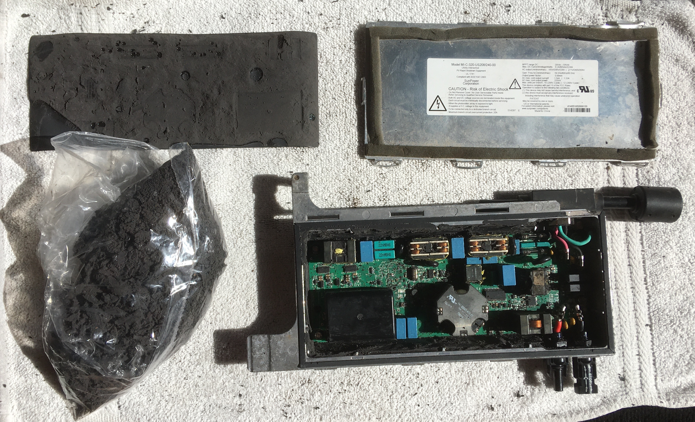

Introduction
My parents recently installed solar panels on their roof to transistion to renewable energy use while at the same time breaking their dependence on the grid for energy supply. To power the house with solar energy required microinverters and a battery in addition to the solar panels. The primary function of the microinverters is to convert the DC power coming from each panel into AC power that can be used in the house circuits. The battery allows energy to be stored when more energy is produced by the panels than is used in the house. When one of the Sunpower MI-C-320-US208/240-00 Microinverters failed on my parents roof, I had the opportunity to crack it open and try to understand how it worked.
Front View

Back View
Before I get into the teardown, I'd like to discuss a bit of the history of how microinverters came to be and what other products are used as alternatives based on some quick internet searches I did. Any solar energy system includes some kind of inverter to convert the DC output of the panel to the AC input used in power lines, homes, and appliances. Inverters accomplish this conversion from DC to AC through a series of switches (IGBTs) that are rapidly opened and closed with Pulse Width Modulation (PWM) by a controller IC imitating the sinusoidal nature of alternating current. When solar panels first came about commercially, the energy was converted from AC to DC using string inverters. Several solar panels would be connected together through linking wires, forming a "string" of solar panels, and then fed into one centralized inverter unit. Daisy-chaining the solar panels in this fashion makes for easy installation, but when the output of one solar panel in the string is lowered, all the rest in the string are limited by that weakest link. To combat this issue, power optimizers can be placed on each panel to modulate the DC power output of each panel so that they can function at their highest output independent of the output of others in the string. The power optimizers on each panel also allow one to monitor the output of individual panels rather than just the output of the whole string. Despite these improvements, power optimizers still require the use of a centralized inverter which limits the size of the solar panel array that can be used and introduces a central point of failure capable of shutting down all system functionality. Adding an inverter unit under each solar panel—microinverters—addresses these problems at the expense of higher part and installation costs. String inverters, inverters with power optimizers, and microinverters each provide different benefits and so the decision of which to use is often left to the user with recommendations provided based on their particular application.
Potting Compound
Although I had heard of NEMA ratings before this teardown in describing how well smart phones were sealed, the experience of opening up this microinverter gave me a much greater appreciation for what exactly it means to seal electronics. The National Electrical Manufacturers Association (NEMA) develops standards for the manufacture of electronics. One such standard (NEMA Standard 250) is used to categorize the performance of electircal enclosures against environmental effects such as dirt and moisture. Based on an online seller for this product, the microinverter has a NEMA Enclosure Rating of NEMA 1, the lowest on the rating scale. At this level, the microinverter enclosure is expected to protect people from any hazardous parts that may be contained inside and prevent any solids like dirt from entering the enclosure in indoor environments. This hardly seems like an appropriate rating for a product that will be sitting on the roof exposed to blowing dirt, rain, and hot sunshine. Diassembling the product seemed to reaffirm that this product deserved a much higher NEMA Enclosure Rating than had been given by the online seller.
The first step in the diassembly was removing the metal back cover secured by ten metal tabs mated to slots on the body. This alone would have likely been sufficient for a NEMA 1 rating. Underneath the metal cover lay a thick plastic sheet that I was able to peel back using just my fingers. What lay below shocked me. The entire PCA had been submerged in a potting compound having the consistency of rubber and a sweet fruity odor. Being completely submerged in this rubber-like compound, it's hard to imagine what could damage the circuit board except maybe an explosion. It was then that I learned how I long this teardown would take if I wanted to get an idea for how the microinverter worked. Using a flathead screwdriver, pair of needle nose pliers, and a box cutter I (with help from my dad from time to time) removed as much of the potting compound as possible to expose the printed circuit assembly (PCA) that lay underneath.

Sealed Microinverter PCA

Potting Compound Exposed from Underneath Stiff Plastic Sheet

PCA Components Partially Exposed From Excavation
Exploded View with PCA Fully Exposed
Hoping to find more information about how the microinverter worked, I scanned through Sunpower's AC module (used synonymously with microinverter I think in this case) patents—for which they had provided a link on the back cover of the microinverter. Most of the patents appeared to focus on the circuit schematics of the microinverter, but one included sketches of the physical structure of one of their microinverters, albeit an older and substantially different looking model. Nonetheless, they discussed the potting process somewhat and I found it interesting that they mentioned the potting compound electrically insulates components from one another in addition to protecting the board from environmental effects. I imagine overheating is also a major concern when submerging boards in a thick insulating potting compound as the electrical components cannot release as quickly as when they are exposed to just air. The patent, linked here, mentioned that electrical components likely to release a lot of heat could be partially exposed or connected to heat sinks exposed to the surface.
Microinverter PCA
With the exception of the metal cover and bolts, the entire switch is contained on one PCA. The user-accessible portions of the PCA include five ethernet (RJ-45) ports each with a set of green LEDS to indicate link, activity, and speed; a green power LED; a power jack requiring 12 V DC; and a power switch. These externally accesible components are pictured below. The port labeled 5 and separated from the rest is designed to be used as the uplink, where the router (or other switches) would be connected. Although the router could be connected to any of the ports, it is likely clearer for troubleshooting purposes to use the uplink port for the connection to the router (or other switches).
Microinverter PCA